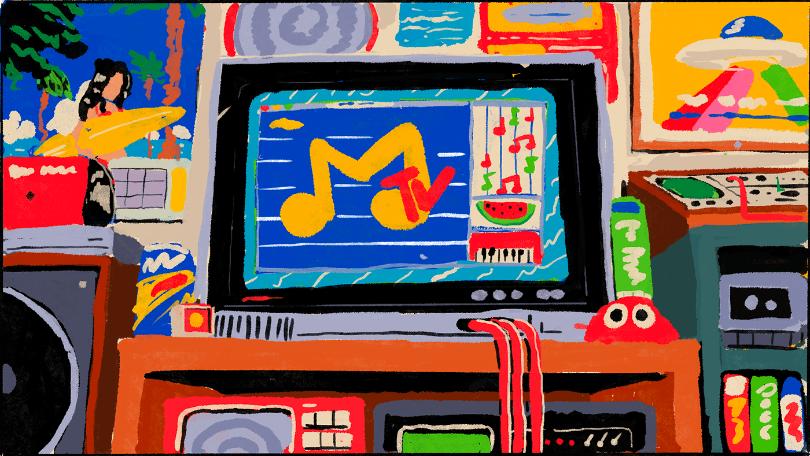
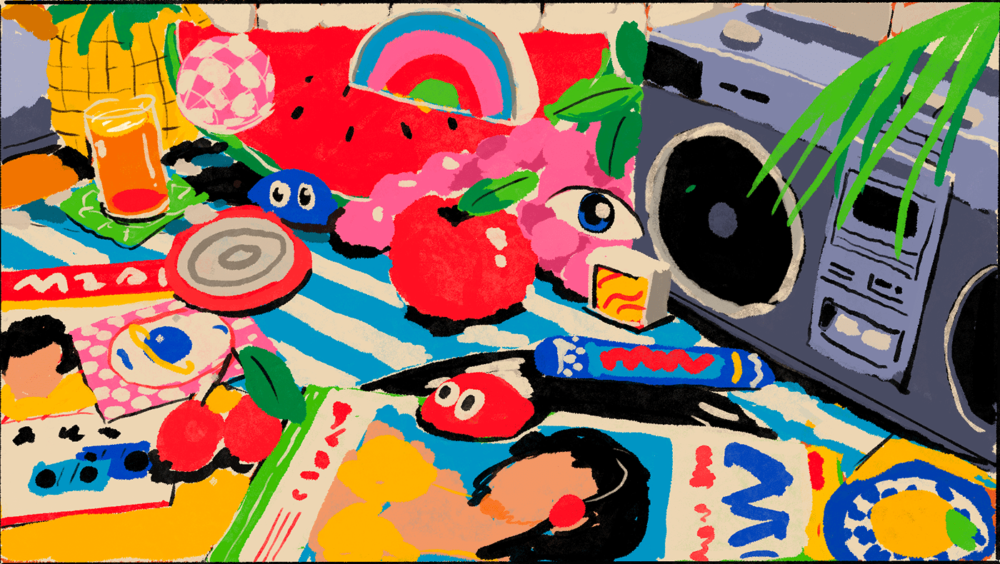
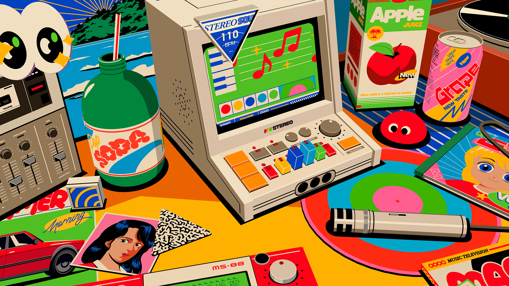
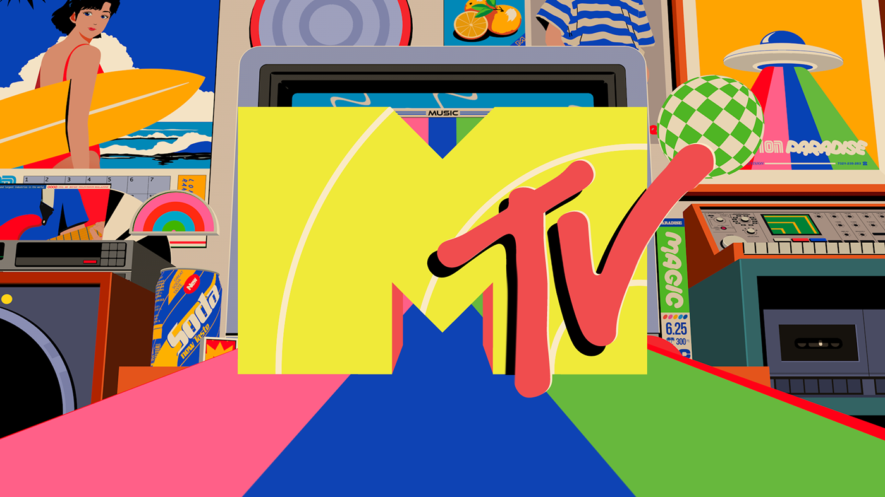

Building a PyQt6 Zhihu Client
把内容浏览、下载和桌面 GUI 结合起来：一个关于 PyQt6、爬虫与工具体验的项目记录。
PythonPyQt6GUI
Personal Blog / Mechanical Field Notes
Hi there! I'm Kirin — a student exploring full-stack development and mechanical engineering. I build useful tools, visual experiments, and elegant solutions while keeping curiosity alive.
把内容浏览、下载和桌面 GUI 结合起来：一个关于 PyQt6、爬虫与工具体验的项目记录。
从 USB 通信到实时图像处理，记录 TOF 相机采集软件背后的工程拆解。
把启发式、障碍物和路径回溯做成可观察的算法笔记，让抽象搜索变得可见。
Published
基于 PyQt6 的知乎客户端，支持内容浏览和下载。
GitHub ↗Published
TOF 相机数据采集与实时处理软件，连接硬件、图像和工程调试。
GitHub ↗Published
民事法律文书电子化管理系统，处理文件转换、管理和加密存储。
GitHub ↗Experiment
HTML5、CSS3 与 JavaScript 组成的触摸滑动画廊实验。
View gallery →


